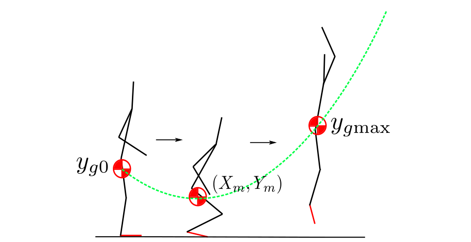
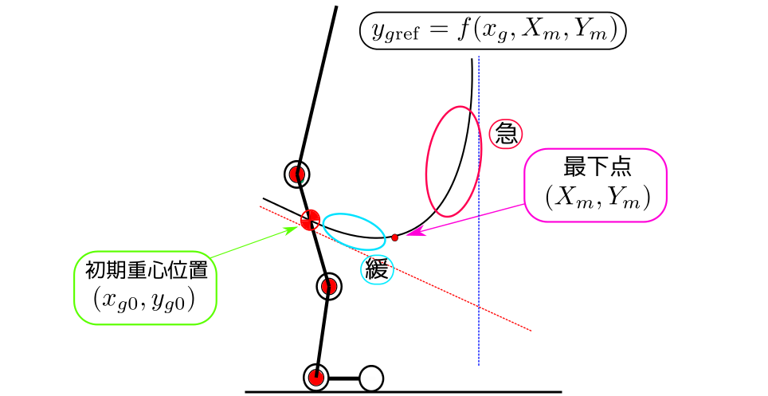

動物の動歩行の一形態として分類される「跳躍歩容」と呼ばれる動作パターンを模倣した脚式歩行ロボットの研究は近年盛んに行われている． 「跳躍歩容」の特徴は，その歩容において支持脚が完全に地面から離れる状態と， 地面に足が接地した状態があることであり，それぞれの状態においては「角運動量保存則」， 「足先位置での拘束」が働く． このように「跳躍歩容」は一連の動きの中で拘束の変化する， 制御論的に困難な運動である．
跳躍歩容研究の対象として有名なものにAcrobotがある． Acrobotは人間を最も単純化したモデルとして提案されたものであるが， 動きの自由度が低く， 技巧的な動作を実現する理論の構築という点では制御対象としてAcrobotを扱うことには限界がある． そこで本研究では， 制御対象として4リンク3アクチュエータロボットを扱う． このシステムはAcrobotに比べてより詳細に人間をモデル化したものになっており， Acrobotが1入力であるのに対し， 本システムは多入力であるため， Acrobotに比べてより技巧的な動作や複雑な制御が可能になると考えられる． その一方で，本システムは入力の数よりも状態の数が多い劣駆動システムなので， 制御は本質的に困難な問題となる．
本研究ではこの4リンク3アクチュエータロボットに対し， システムの持つ劣駆動性・可変拘束性を考慮した上で， 人間のような跳躍動作を実現するような制御則を構築することを目的とする． 制御戦略として，実際の人間の跳躍動作を観察することにより， その特徴を実現するような制御則を構築する． 特に重心と重心回りの角運動量に着目した制御則を構築することにより， それらを陽に考慮した跳躍動作をシミュレーション上で実現した． また実機による制御実験を行い，提案した制御則の有効性を示した．
しゃがみ込み跳躍制御

しゃがみ込むことにより， 直立に近い姿勢からでも跳躍が可能となり， しゃがみ込むエネルギーを利用した高効率な跳躍運動が実現された．


また，しゃがみ込み跳躍の制御として， 総重心が追従すべき経路の探索及び設計をおこなった． これにより人間が直立姿勢から跳躍をおこなう場合の重心の経路計画を陽に評価することが可能となった．
非駆動関節拘束による不安定なゼロダイナミクスを用いた垂直跳躍制御
つま先蹴りによる跳躍運動は劣駆動な状態における運動であるため， 軌道設計法などによって制御することはできない． そこで，出力零化制御による不安定なゼロダイナミクスによって運動を制御することが考えられるが， この場合，離陸までの短い時間内に出力関数の零化が厳密に達成されるかといった新たな問題が生じる．
離陸までの間に零化を達成しながらも静止した状態からの運動制御を行うために， 本研究では非駆動な関節を拘束することによって， 不安定なゼロダイナミクスに沿ってそのほかの関節角が動き出すことに着目する． これに加えて，重心を鉛直線上に保ちつつ各関節角を不安定なゼロダイナミクスに同期させることによって， つま先蹴りを利用した垂直跳躍運動が達成される．
動画
- 経路計画によるしゃがみ込み跳躍
- 不安定なゼロダイナミクスを用いた跳躍
- 実験
投稿論文・学会発表
- Tatsuya Ibuki, Naoki Endo, Mitsuji Sampei. "Squat Jumping Motion Control for 4-link Robots by Trajectory Planning of the Center of Mass", SICE Annual Conference, 2015
- 遠藤 直輝, 伊吹 竜也, 三平 満司, "重心軌道計画を用いた4リンク3アクチュエータロボットの跳躍制御", 第14回 「運動と振動の制御」シンポジウム, 2015
- 石川温人，伊吹竜也，三平満司，"非駆動関節拘束によるゼロダイナミクスを用いた4-link Robotの跳躍制御"， 第1回制御部門マルチシンポジウム，計測自動制御学会，2014
- 加藤大地，関口和真，三平満司，"4リンク3アクチュエータロボットの跳躍制御"， 第12回「運動と振動の制御」シンポジウム，日本機械学会，2011
- 遠藤 直輝, 伊吹 竜也, 三平 満司, "重心軌道計画を用いた4リンク3アクチュエータロボットの跳躍制御", 第14回 「運動と振動の制御」シンポジウム, 日本機械学会, 2015